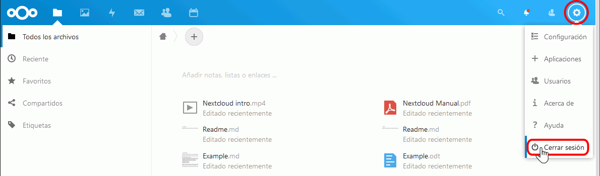
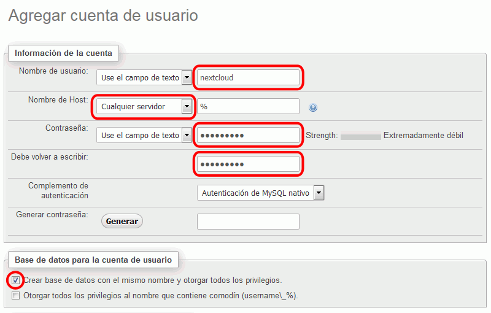
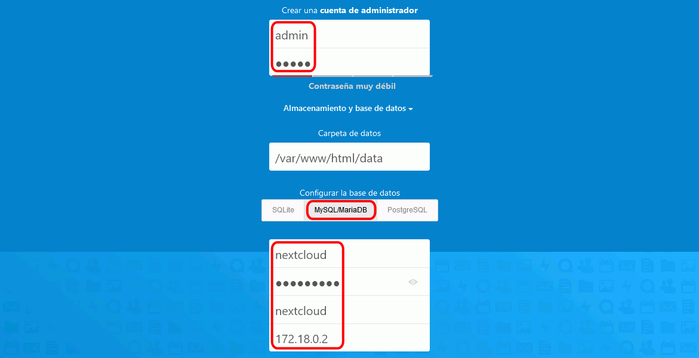
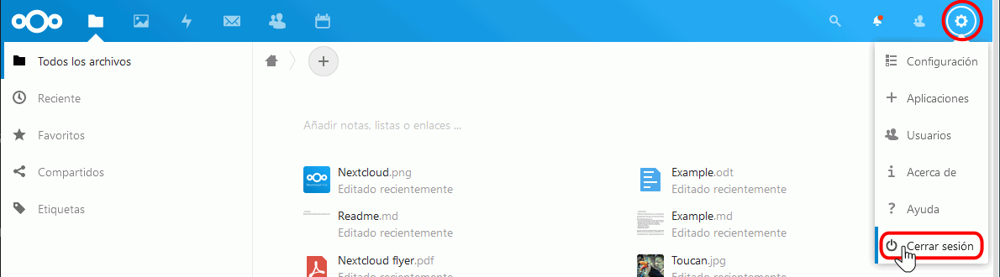

En esta lección se proponen soluciones detalladas de los ejercicios (1) de Nextcloud. Se recomienda intentar realizarlos primero sin recurrir a estas soluciones.
sudo docker run -d --name=nc-sqlite -p 8080:80 nextcloud
ip addr | grep 192.168
inet 192.168.1.5/24 brd 192.168.1.255 scope global dynamic enp0s3

sudo docker stop nc-sqlite
sudo docker rm nc-sqlite
sudo docker run -d --name=nc-sqlite -p 8080:80 --mount type=volume,source=nc-vol,target=/var/www/html nextcloud:15.0.0
sudo docker stop nc-sqlite
sudo docker rm nc-sqlite
sudo docker run -d --name=nc-sqlite -p 8080:80 --mount type=volume,source=nc-vol,target=/var/www/html nextcloud:15.0.4sudo docker network create nc-networksudo docker run -d --name=nc-mariadb -e ALLOW_EMPTY_PASSWORD=yes --net=nc-network bitnami/mariadbsudo docker run -d --name=nc-pma -e DATABASE_HOST=nc-mariadb -p 8801:80 --net=nc-network bitnami/phpmyadmin
sudo docker run -d --name=nextcloud -p 80:80 -p 443:443 --net=nc-network nextcloudSi va a utilizar MariaDB:
sudo docker network inspect nc-networkDocker muestra la información de todos los contenedores pertenecientes a la red en formato JSON. La dirección debe ser del tipo 172.XXX.YYY.ZZZ
...
"Containers": {
...
"b9ea0f79990ae629df9ca434ecbd3db972c76e008d98f9c51359ea2fcf3f122f": {
"Name": "nc-mariadb",
"EndpointID": "5752daa968e19f45b22dede29dffd9a0bbe8b986a2eac28defa9a15320a66dfe"
"MacAddress": "02:42:ac:13:00:03",
"IPv4Address": "172.19.0.3/16",
"IPvAddress": ""
...
},
...


sudo docker exec -it nextcloud /bin/bashapt updateapt install ssl-certmake-ssl-cert generate-default-snakeoil --force-overwritea2enmod ssla2ensite default-sslservice apache2 restartsudo docker start nextcloudPara configurar el servidor Apache del contenedor de manera que fuerce conexiones seguras:
sudo docker exec -it nextcloud /bin/bashfind / -name apache2.confexitsudo docker cp nextcloud:/etc/apache2/apache2.conf /tmp/apache2.confsudo cp /tmp/apache2.conf /tmp/apache2.conf.originalsudo vi /tmp/apache2.conf
<VirtualHost *:80>
Servername AAA.BBB.CCC.DDD
Redirect permanent / https://AAA.BBB.CCC.DDD/
</VirtualHost>
Nota: Creo que el valor de Servername no es importante, pero debe haber Servername.
sudo docker cp /tmp/apache2:conf nextcloud:/etc/apache2/apache2.confsudo docker exec -it nextcloud /bin/bashservice apache2 restartsudo docker start nextcloudPara cambiar la IP de la máquina virtual:
ip addrroute -nsudo vi /etc/network/interfaces
# The primary network interface
auto enp0s3
iface enp0s3 inet dhcp
... a fija:
# The primary network interface
auto enp0s3
#iface enp0s3 inet dhcp
iface enp0s3 inet static
address 192.168.1.16
netmask 255.255.255.0
gateway 192.168.1.1
dns-nameservers 8.8.8.8
Para modificar el valor de la IP en el archivo apache2.conf, siga los pasos explicados en el ejercicio 5.
Por escribir